| ✅ | ✅ | ✅ | ✅ | ✅ | ✅ |
|---|
Color Sensor¶
- class ColorSensor(port)¶
LEGO® SPIKE Color Sensor.
- Parameters:
port (Port) – Port to which the sensor is connected.
- awaitcolor(surface=True) Color¶
Scans the color of a surface or an external light source.
You choose which colors are detected using the
detectable_colors()method. By default, it detectsColor.RED,Color.YELLOW,Color.GREEN,Color.BLUE,Color.WHITE, orColor.NONE.- Parameters:
surface (bool) – Choose
trueto scan the color of objects and surfaces. Choosefalseto scan the color of screens and other external light sources.- Returns:
Detected color.`
- awaitreflection() int: %¶
Measures how much a surface reflects the light emitted by the sensor.
- Returns:
Measured reflection, ranging from 0% (no reflection) to 100% (high reflection).
- awaitambient() int: %¶
Measures the ambient light intensity.
- Returns:
Ambient light intensity, ranging from 0% (dark) to 100% (bright).
Advanced color sensing
- awaithsv(surface=True) Color¶
Scans the color of a surface or an external light source.
This method is similar to
color(), but it gives the full range of hue, saturation and brightness values, instead of rounding it to the nearest detectable color.- Parameters:
surface (bool) – Choose
trueto scan the color of objects and surfaces. Choosefalseto scan the color of screens and other external light sources.- Returns:
Measured color. The color is described by a hue (0–359), a saturation (0–100), and a brightness value (0–100).
- detectable_colors(colors)¶
- detectable_colors() Collection[Color]
Configures which colors the
color()method should detect.Specify only colors that you wish to detect in your application. This way, the full-color measurements are rounded to the nearest desired color, and other colors are ignored. This improves reliability.
If you give no arguments, the currently chosen colors will be returned.
When coding with blocks, this is configured in the sensor setup block.
Built-in lights
This sensor has 3 built-in lights. You can adjust the brightness of each light. If you use the sensor to measure something, the lights will be turned on or off as needed for the measurement.

Examples¶
Measuring color and reflection¶
from pybricks.pupdevices import ColorSensor
from pybricks.parameters import Port
from pybricks.tools import wait
# Initialize the sensor.
sensor = ColorSensor(Port.A)
while True:
# Read the color and reflection
color = sensor.color()
reflection = sensor.reflection()
# Print the measured color and reflection.
print(color, reflection)
# Move the sensor around and see how
# well you can detect colors.
# Wait so we can read the value.
wait(100)
Waiting for a color¶
from pybricks.pupdevices import ColorSensor
from pybricks.parameters import Port, Color
from pybricks.tools import wait
# Initialize the sensor.
sensor = ColorSensor(Port.A)
# This is a function that waits for a desired color.
def wait_for_color(desired_color):
# While the color is not the desired color, we keep waiting.
while sensor.color() != desired_color:
wait(20)
# Now we use the function we just created above.
while True:
# Here you can make your train/vehicle go forward.
print("Waiting for red ...")
wait_for_color(Color.RED)
# Here you can make your train/vehicle go backward.
print("Waiting for blue ...")
wait_for_color(Color.BLUE)
Reading reflected hue, saturation, and value¶
from pybricks.pupdevices import ColorSensor
from pybricks.parameters import Port
from pybricks.tools import wait
# Initialize the sensor.
sensor = ColorSensor(Port.A)
while True:
# The standard color() method always "rounds" the
# measurement to the nearest "whole" color.
# That's useful for most applications.
# But you can get the original hue, saturation,
# and value without "rounding", as follows:
color = sensor.hsv()
# Print the results.
print(color)
# Wait so we can read the value.
wait(500)
Changing the detectable colors¶
By default, the sensor is configured to detect red, yellow, green, blue, white, or no color, which suits many applications.
For better results in your application, you can measure your desired colors in advance, and tell the sensor to look only for those colors. Be sure to measure them at the same distance and light conditions as in your final application. Then you’ll get very accurate results even for colors that are otherwise hard to detect.
from pybricks.pupdevices import ColorSensor
from pybricks.parameters import Port, Color
from pybricks.tools import wait
# Initialize the sensor.
sensor = ColorSensor(Port.A)
# First, decide which objects you want to detect, and measure their HSV values.
# You can do that with the hsv() method as shown in the previous example.
#
# Use your measurements to override the default colors, or add new colors:
Color.GREEN = Color(h=132, s=94, v=26)
Color.MAGENTA = Color(h=348, s=96, v=40)
Color.BROWN = Color(h=17, s=78, v=15)
Color.RED = Color(h=359, s=97, v=39)
# Put your colors in a list or tuple.
my_colors = (Color.GREEN, Color.MAGENTA, Color.BROWN, Color.RED, Color.NONE)
# Save your colors.
sensor.detectable_colors(my_colors)
# color() works as usual, but now it returns one of your specified colors.
while True:
color = sensor.color()
# Print the color.
print(color)
# Check which one it is.
if color == Color.MAGENTA:
print("It works!")
# Wait so we can read it.
wait(100)
Reading ambient hue, saturation, value, and color¶
from pybricks.pupdevices import ColorSensor
from pybricks.parameters import Port
from pybricks.tools import wait
# Initialize the sensor.
sensor = ColorSensor(Port.A)
# Repeat forever.
while True:
# Get the ambient color values. Instead of scanning the color of a surface,
# this lets you scan the color of light sources like lamps or screens.
hsv = sensor.hsv(surface=False)
color = sensor.color(surface=False)
# Get the ambient light intensity.
ambient = sensor.ambient()
# Print the measurements.
print(hsv, color, ambient)
# Point the sensor at a computer screen or colored light. Watch the color.
# Also, cover the sensor with your hands and watch the ambient value.
# Wait so we can read the printed line
wait(100)
Blinking the built-in lights¶
from pybricks.pupdevices import ColorSensor
from pybricks.parameters import Port
from pybricks.tools import wait
# Initialize the sensor.
sensor = ColorSensor(Port.A)
# Repeat forever.
while True:
# Turn on one light at a time, at half the brightness.
# Do this for all 3 lights and repeat that 5 times.
for i in range(5):
sensor.lights.on([50, 0, 0])
wait(100)
sensor.lights.on([0, 50, 0])
wait(100)
sensor.lights.on([0, 0, 50])
wait(100)
# Turn all lights on at maximum brightness.
sensor.lights.on(100)
wait(500)
# Turn all lights off.
sensor.lights.off()
wait(500)
Turning off the lights when the program ends¶
from pybricks.parameters import Port
from pybricks.pupdevices import ColorSensor
from pybricks.tools import wait
# Initialize the sensor.
sensor = ColorSensor(Port.A)
def main():
# Run the main code.
while True:
print(sensor.color())
wait(500)
# Wrap the main code in try/finally so that the cleanup code always runs
# when the program ends, even if an exception was raised.
try:
main()
finally:
# The cleanup code goes here.
print("Cleaning up.")
sensor.lights.off()